銅酸化物超伝導体の機構解明
銅酸化物高温超伝導体は常圧、液体窒素温度以上で超伝導を示します。1986年に発見されましたが、万人が納得する理論が存在せず、 現在も物理学の大問題の一つとして君臨しています。銅酸化物超伝導体の示す数々異常な物性はそれまでの我々の物性に関する理解がいかに未熟であったかを示しています。銅酸化物超伝導が解明された暁には、固体物理の教科書の半分以上が書き直されるとまで言われています。
以下の動画は、銅酸化物高温超伝導体の温度による電気抵抗の変化を示しています。
(Original: https://www.youtube.com/watch?v=GlX2lL8vDak&nohtml5=False, 動画を再生するには、videoタグをサポートしたブラウザが必要です)
上の動画で明らかなように、銅酸化物高温超伝導体は常温ではほとんど電気を通しません。しかし、液体窒素温度では超伝導となり非常によく電気を通します。これまで知られていた超伝導体は常温でもよく電気を通しました。この場合、常温での状態（超伝導状態よりも高温側の状態を、常伝導状態と呼ぶ）は、フェルミー流体論で説明できる金属状態です。フェルミー流体はフェルミー面を持ち、BCS理論では、電子間に働くフォノンを介した引力が、このフェルミー面の不安定性を起こし、それが原因で超伝導状態を実現すると説明しています。別の言葉で言うと、電子間に働く引力によりフェルミー面近傍で電子対（クーパー対と呼ばれる）形成が起こり、電子励起にエネルギーギャップが表れ、波動関数がrigidになり、超伝導状態が実現すると説明しています。しかし、銅酸化物では、常伝導状態がフェルミー流体論で説明できる金属状態でありません。
銅酸化物高温超伝導体の相図
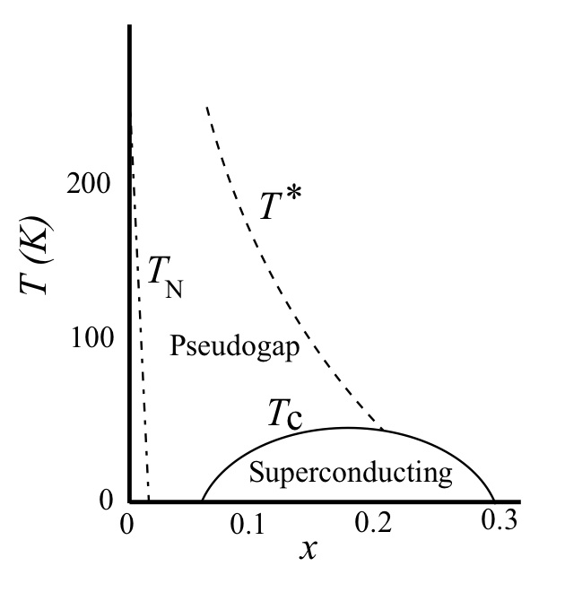
銅酸化物高温超伝導は反強磁性絶縁体である母物質にホールまたは電子をドープした時に実現されます。x=0が母物質を表し、TNが反強磁性転移が起こるネール温度です。銅酸化物は、CuO2面と呼ばれる２次元平面構造を持ち、これが電気伝導はこの面で主に起こっていると考えられています。ホールドープ量xはCuO2面銅一個あたりのホール数でを示し、xが0.05から0.3くらいの範囲で超伝導相が出現します。Tcが超伝導転移温度で、その低温側が超伝導相です。超伝導相の高温側の常伝導相は通常の金属相ではなく、擬ギャップ(pseudogap)相と呼ばれる異常な電気伝導相です。T*は擬ギャップ相が始まる、擬ギャップ温度を表します。擬ギャップ相の特異な物性（後で、説明します）は、超伝導状態の前駆状態とも考えられています。銅酸化物高温超伝導の理論は、この擬ギャップ相がどのような相であるかも説明しなければなりません。
銅酸化物高温超伝導は反強磁性絶縁体である母物質にホールまたは電子をドープした時に実現されます。x=0が母物質を表し、TNが反強磁性転移が起こるネール温度です。銅酸化物は、CuO2面と呼ばれる２次元平面構造を持ち、これが電気伝導はこの面で主に起こっていると考えられています。ホールドープ量xはCuO2面銅一個あたりのホール数でを示し、xが0.05から0.3くらいの範囲で超伝導相が出現します。Tcが超伝導転移温度で、その低温側が超伝導相です。超伝導相の高温側の常伝導相は通常の金属相ではなく、擬ギャップ(pseudogap)相と呼ばれる異常な電気伝導相です。T*は擬ギャップ相が始まる、擬ギャップ温度を表します。擬ギャップ相の特異な物性（後で、説明します）は、超伝導状態の前駆状態とも考えられています。銅酸化物高温超伝導の理論は、この擬ギャップ相がどのような相であるかも説明しなければなりません。
砂時計型磁気励起スペクトルとスピン渦の存在
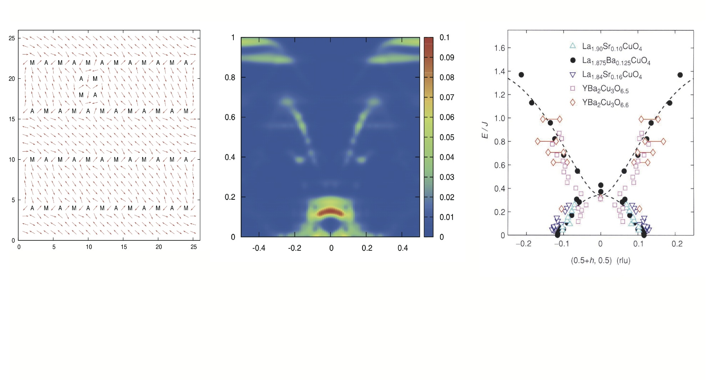
擬ギャップ相では、中性子線散乱実験により磁気励起スペクトルが観測されています。この磁気励起スペクトルの大きな特徴は、砂時計型の分散を持っているということです（一番右図）。我々は、これは、擬ギャップ相にはスピン渦が生成しており、スピン渦存在下でのスピン波励起を考えると説明できることを示しました（一番左に、スピン渦を、中央に計算により求めたスピン波の励起スペクトルを図示してあります)。もう一つ、この砂時計型の磁気励起スペクトルを説明する理論にストライプモデル理論があります。スピン渦が一列に並んだ様子は、ストライプモデルとも一致しますので、スピン渦モデルがより一般的なモデルということができます。このよスペクトルが観測されるためには、ホールの移動度が中性紙散乱の特徴的な時間スケールに比べ十分小さい必要があります。
擬ギャップ相では、中性子線散乱実験により磁気励起スペクトルが観測されています。この磁気励起スペクトルの大きな特徴は、砂時計型の分散を持っているということです（一番右図）。我々は、これは、擬ギャップ相にはスピン渦が生成しており、スピン渦存在下でのスピン波励起を考えると説明できることを示しました（一番左に、スピン渦を、中央に計算により求めたスピン波の励起スペクトルを図示してあります)。もう一つ、この砂時計型の磁気励起スペクトルを説明する理論にストライプモデル理論があります。スピン渦が一列に並んだ様子は、ストライプモデルとも一致しますので、スピン渦モデルがより一般的なモデルということができます。このよスペクトルが観測されるためには、ホールの移動度が中性紙散乱の特徴的な時間スケールに比べ十分小さい必要があります。
ループ電流の存在
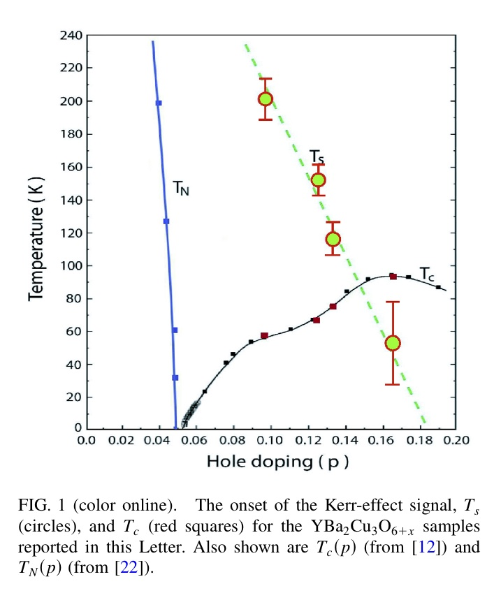
電磁波の偏光面が磁場中を移動すると回転する効果（磁気カー効果）を利用して物質中の磁場を測定することができます。銅酸化物では、磁気カー効果が観測されています。磁場の原因は、強磁性またはループ電流です。左図のように擬ギャップ相が始まる温度 T*と磁気カー効果が観測される温度（図では、Ts と書いてある）が一致します（J. Xia et al., PRL 100(2008) 127002）。銅酸化物は強磁性を示しません。従って、磁気カー効果はループ電流のよるものと考えられます。つまり、擬ギャップ相には何らかのループ電流が存在します。我々は、このループ電流はスピン渦が生成された為に生じた電流、``スピン渦誘起ループ電流’’であると考えています。
電磁波の偏光面が磁場中を移動すると回転する効果（磁気カー効果）を利用して物質中の磁場を測定することができます。銅酸化物では、磁気カー効果が観測されています。磁場の原因は、強磁性またはループ電流です。左図のように擬ギャップ相が始まる温度 T*と磁気カー効果が観測される温度（図では、Ts と書いてある）が一致します（J. Xia et al., PRL 100(2008) 127002）。銅酸化物は強磁性を示しません。従って、磁気カー効果はループ電流のよるものと考えられます。つまり、擬ギャップ相には何らかのループ電流が存在します。我々は、このループ電流はスピン渦が生成された為に生じた電流、``スピン渦誘起ループ電流’’であると考えています。
スモールポーラロン
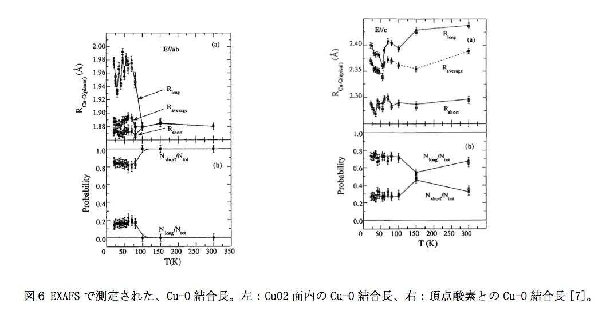
スピン渦誘起ループ電流と超伝導の関係
スピン渦誘起ループ電流のネットワーク
超伝導転移温度
波動関数
波動関数の一価性スピン渦誘起ループ電流
筑波大 ホームページ
実は、現在の超伝導理論には、いくつか、明らかにしなければならない点が残っています。特に、重要なのは、ジョセフソンが予言したac電流が観測されていないということです。ジョセフソンは、超伝導-絶縁体-超伝導体で作った、ジャンクションにdc 電圧をかけるとac電流が流れると予言しました。しかし、実際にはdc電圧をかけることはできません。電流が流れるときは、ジャンクション間の電圧がゼロになってしまい、直流が流れます（これをdcジョセフソン効果という）。ジャンクション間の電圧をゼロでなくするためには、絶縁体の部分に振動する電場が必要です。これは、普通、実験では、マイクロ波を照射することにより実現します。以下の動画がその様子を説明しています。
困ったことに、ファインマン物理学、キッテルの固体物理学入門、ティンカムの超伝導入門などの教科書に、ジャンクションにdc 電圧をかけることができ、実験でac電流が観測されたと記述されてしまいました。このため、上で述べた問題点が残っていることが、一般には、知られることがなくなってしまいました。実は、この問題点は、スピン渦誘起ループ電流による超伝導理論により、解決されます。つまり、スピン渦誘起ループ電流による超伝導理論こそが、本当の超伝導理論である可能性が高いのです。
 量子コンピュータ特許
量子コンピュータ特許
我々は、スピン渦誘起ループ電流を量子ビットとした量子コンピューターの特許を取得しました。 実験家で興味ある方は、ご連絡ください。
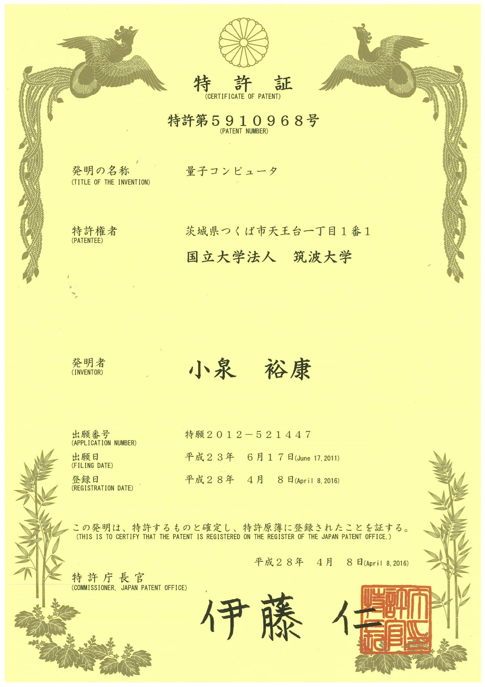
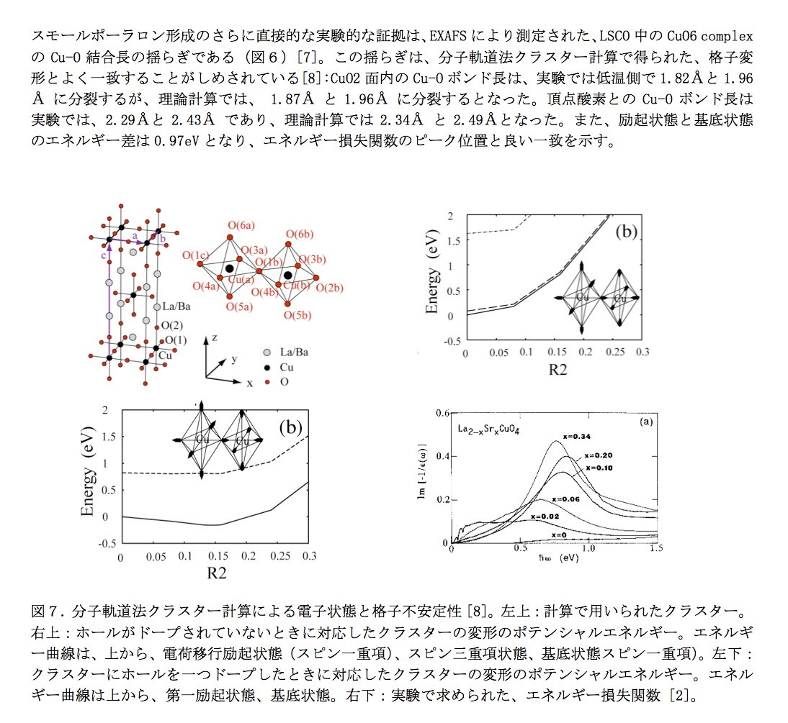
EXAFSにより、銅とその周りの酸素の結合距離Cu-Oの温度変化が測定されています。観測された変形の大きさは、分子軌道法クラスター計算により求められた理論値と良い一致を示します。このことは、ドープされたホールは擬ギャップ温度以下では、格子の変形を伴ったスモールポーラロンとなっていることを示唆します。スモールポーラロンの移動度は一般に低温では非常に小さくなります。擬ギャップ相では、スモールポーラロン化したホールを中心にスピン渦が形成され、それが、スピン渦誘起ループ電流を生成すると考えると、つじつまが合います。
ところで、角度分解光電子分光(ARPES)の結果には、バンド分散が見られ、スモールポーラロンの痕跡は見えません。ARPESは表面付近の電子状態を見るのには適していますが、バルクの電子状態を見ることには限界があります。EXAFSの結果とARPESの結果は、スモールポーラロン形成はバルクの性質であり、表面付近では抑制されていると考えれば、矛盾しません。
EXAFSにより、銅とその周りの酸素の結合距離Cu-Oの温度変化が測定されています。観測された変形の大きさは、分子軌道法クラスター計算により求められた理論値と良い一致を示します。このことは、ドープされたホールは擬ギャップ温度以下では、格子の変形を伴ったスモールポーラロンとなっていることを示唆します。スモールポーラロンの移動度は一般に低温では非常に小さくなります。擬ギャップ相では、スモールポーラロン化したホールを中心にスピン渦が形成され、それが、スピン渦誘起ループ電流を生成すると考えると、つじつまが合います。
ところで、角度分解光電子分光(ARPES)の結果には、バンド分散が見られ、スモールポーラロンの痕跡は見えません。ARPESは表面付近の電子状態を見るのには適していますが、バルクの電子状態を見ることには限界があります。EXAFSの結果とARPESの結果は、スモールポーラロン形成はバルクの性質であり、表面付近では抑制されていると考えれば、矛盾しません。
スピン渦誘起ループ電流と超伝導の関係
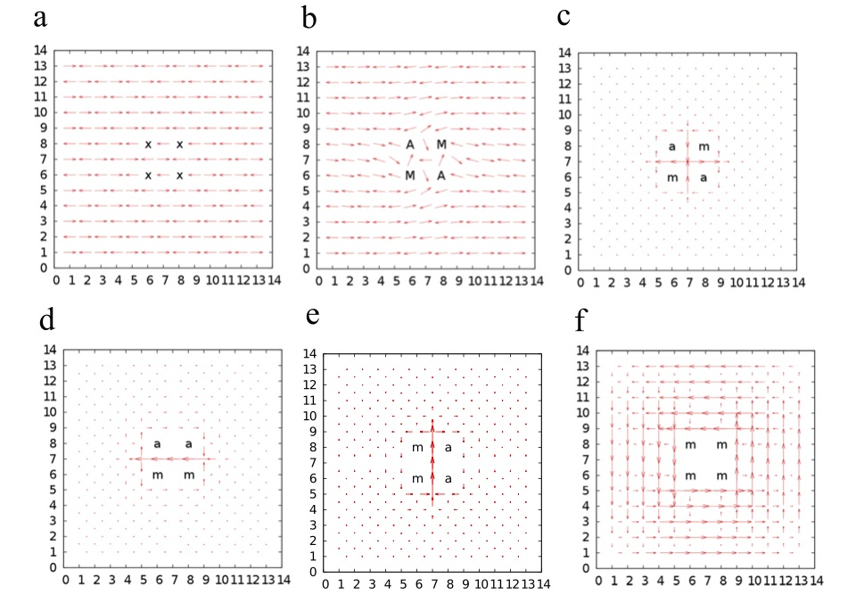
銅酸化物超伝導で観測されている、実験事実、1)常伝導状態では、電気伝導度が小さい; 2)砂時計型の磁気励起スペクトルを持つスピン構造が存在している;3)ループ電流が存在している;4) バルクではホールは格子変形を伴い、スモールポーラロンとなっている。これらの事実は、銅酸化物では、``スピン渦誘起ループ電流’’が電流要素となっていると考えると説明可能です。左図で、aは反強磁性スピン秩序の中に４つのホール(xで表されている)が存在している状況を表しています。bでは、xを中心に右回りのスピン渦Aと左回りスピン渦Mが存在しています。スピン渦形成の原因が伝導電子がスピン方向をねじりながら運動するためである場合、スピン渦誘起ループ電流が生じます。この電流は安定な電流で、各々のスピン渦に対して、右回り(aで中心を示している）と左回り(mで中心を示している）の自由度があります。c-fはループ電流の向きを変えることにより生じる異なった電流パターンを示しています。
銅酸化物超伝導で観測されている、実験事実、1)常伝導状態では、電気伝導度が小さい; 2)砂時計型の磁気励起スペクトルを持つスピン構造が存在している;3)ループ電流が存在している;4) バルクではホールは格子変形を伴い、スモールポーラロンとなっている。これらの事実は、銅酸化物では、``スピン渦誘起ループ電流’’が電流要素となっていると考えると説明可能です。左図で、aは反強磁性スピン秩序の中に４つのホール(xで表されている)が存在している状況を表しています。bでは、xを中心に右回りのスピン渦Aと左回りスピン渦Mが存在しています。スピン渦形成の原因が伝導電子がスピン方向をねじりながら運動するためである場合、スピン渦誘起ループ電流が生じます。この電流は安定な電流で、各々のスピン渦に対して、右回り(aで中心を示している）と左回り(mで中心を示している）の自由度があります。c-fはループ電流の向きを変えることにより生じる異なった電流パターンを示しています。
スピン渦誘起ループ電流のネットワーク
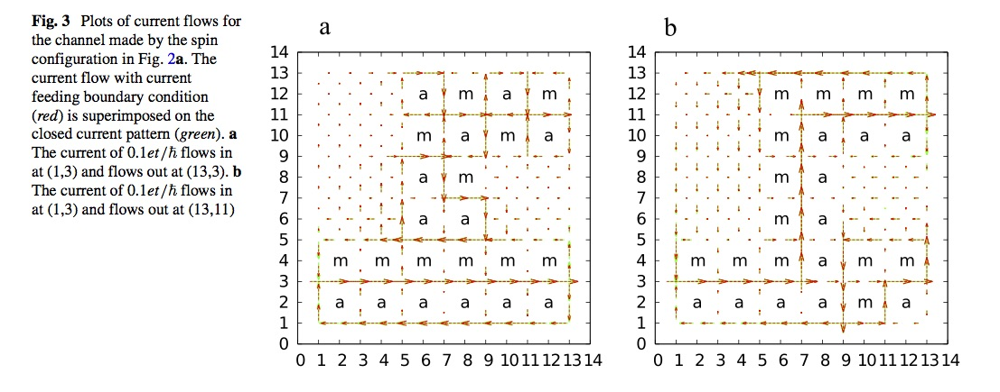
それでは、超伝導電流はどうやって生じるのでしょうか？我々は、スピン渦誘起ループ電流のネットワークが超伝導電流を生み出すと考えています。スピン渦のネットワークが存在する状況で、ループ電流の向きが適当な組み合わせなると、巨視的な電流生成が可能となります。 ホール濃度が小さいとネットワークによる巨視的な電流生成は不可能となります。これが、x<0.05で超伝導が生じない理由と考えられます。 また、xが大きくなりすぎるとスピン渦が壊れてしまい、超伝導が消えてしまいます。これが、x>0.3で超伝導が生じない理由と考えられます。
それでは、超伝導電流はどうやって生じるのでしょうか？我々は、スピン渦誘起ループ電流のネットワークが超伝導電流を生み出すと考えています。スピン渦のネットワークが存在する状況で、ループ電流の向きが適当な組み合わせなると、巨視的な電流生成が可能となります。 ホール濃度が小さいとネットワークによる巨視的な電流生成は不可能となります。これが、x<0.05で超伝導が生じない理由と考えられます。 また、xが大きくなりすぎるとスピン渦が壊れてしまい、超伝導が消えてしまいます。これが、x>0.3で超伝導が生じない理由と考えられます。
超伝導転移温度
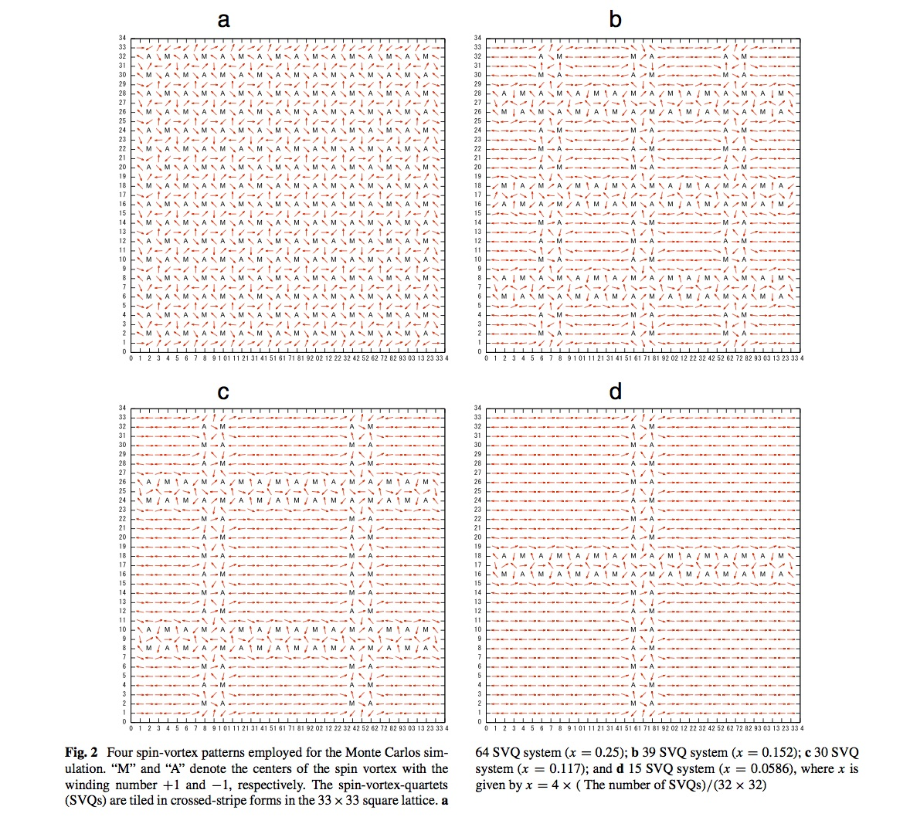
それでは、超伝導転移温度はどのように決まるのでしょうか？我々は、スピン渦誘起ループ電流のネットワークが安定化する温度が関係していると考えました。そこで、左のような４種類のスピン渦配置を考え、簡単のためにスピン渦は 固定し、許されるスピン渦誘起ループ電流の電流パターンの熱的揺らぎをモンテカルロ法により取り入れた計算を行うことにしました。
それでは、超伝導転移温度はどのように決まるのでしょうか？我々は、スピン渦誘起ループ電流のネットワークが安定化する温度が関係していると考えました。そこで、左のような４種類のスピン渦配置を考え、簡単のためにスピン渦は 固定し、許されるスピン渦誘起ループ電流の電流パターンの熱的揺らぎをモンテカルロ法により取り入れた計算を行うことにしました。
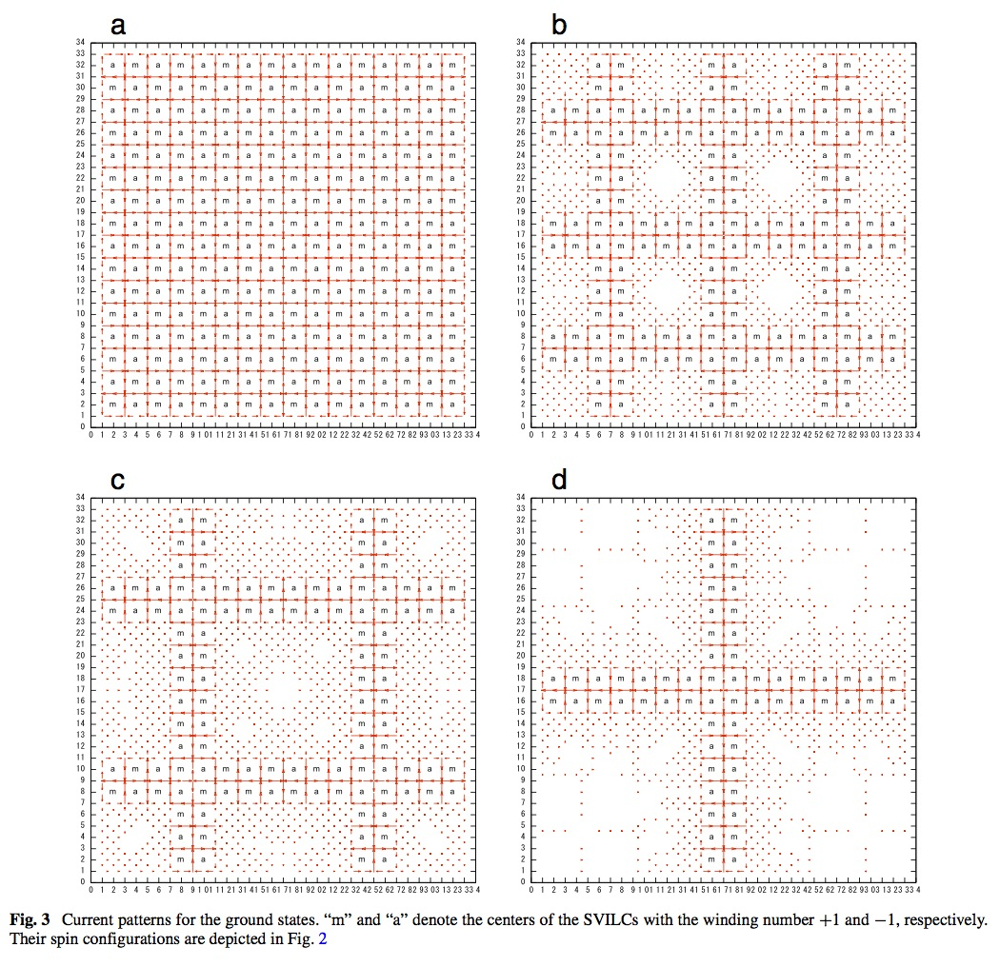
まず、それぞれのスピン配置に対して、エネルギーが最低となるループ電流パターンを求めます。これを、それぞれのループ電流の向きを変えながら、温度を上げていきます。モンテカルロ法により求めたアンサンブルにより、以下の３つの量を計算しました。
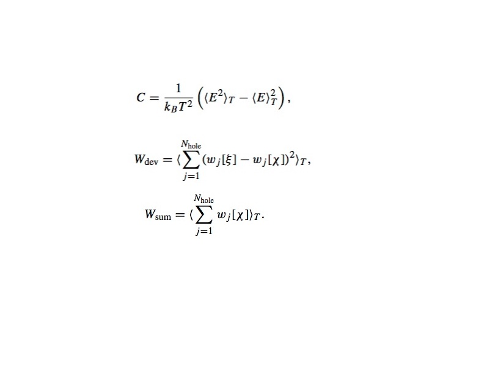
まず、それぞれのスピン配置に対して、エネルギーが最低となるループ電流パターンを求めます。これを、それぞれのループ電流の向きを変えながら、温度を上げていきます。モンテカルロ法により求めたアンサンブルにより、以下の３つの量を計算しました。
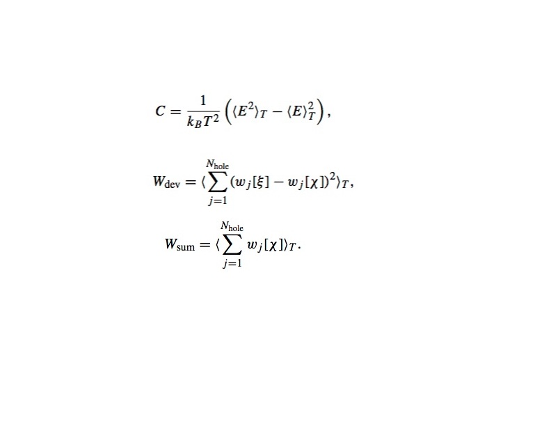
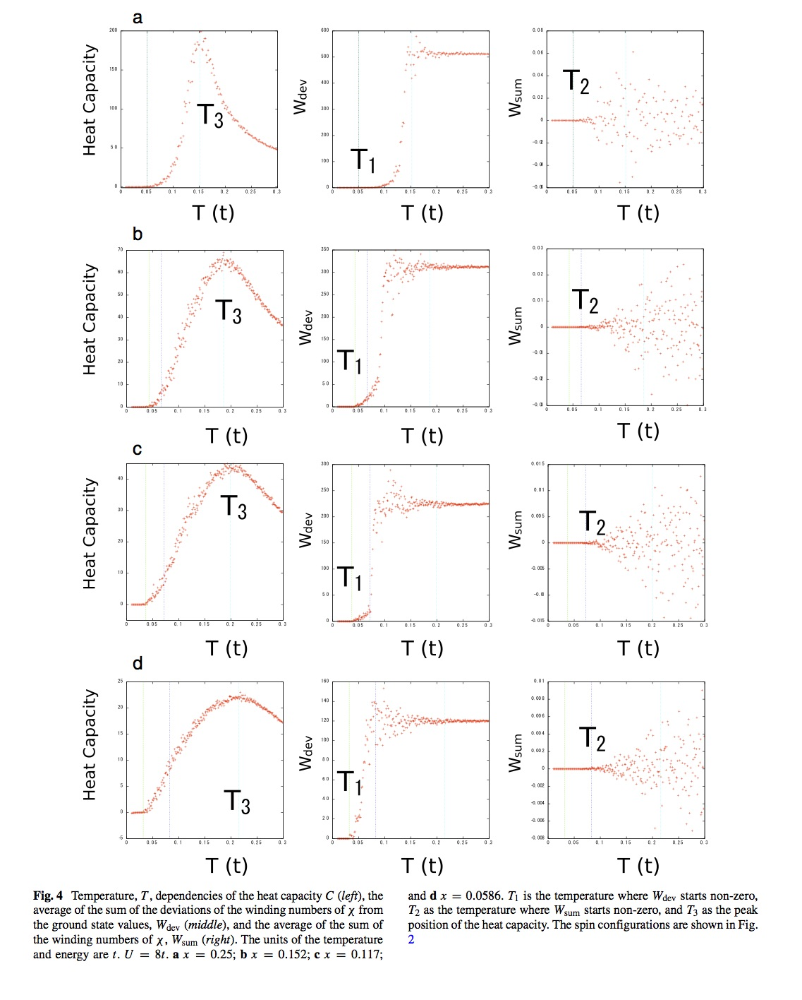
図に見られるように特徴的な３つの温度、T1,T2,T3が表れます。T1以上の温度では、最低エネルギー状態のループ電流パターンからのズレが起こります。これは、エネルギーが最低となるループ電流パターンが安定でなくなることを示しています。しかし、T1からT2の温度で範囲では、ループ電流の右回りのもの数と左回りのもの数が等しいです。T2以上の温度では、ループ電流の右回りのもの数と左回りのもの数に差が出ます。そして、T3以上の温度では、ループ電流が消失します。
図に見られるように特徴的な３つの温度、T1,T2,T3が表れます。T1以上の温度では、最低エネルギー状態のループ電流パターンからのズレが起こります。これは、エネルギーが最低となるループ電流パターンが安定でなくなることを示しています。しかし、T1からT2の温度で範囲では、ループ電流の右回りのもの数と左回りのもの数が等しいです。T2以上の温度では、ループ電流の右回りのもの数と左回りのもの数に差が出ます。そして、T3以上の温度では、ループ電流が消失します。
波動関数
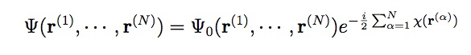
それでは、なぜ、スピン渦が存在するとループ電流が生じるのでしょうか。電子がスピンを捻りながら遍歴運動を行い、スピン渦ができる場合、波動関数は左図のように書けます。Ψ0は電流を生じない部分で、スピン渦が存在すると、座標に関して多価関数となります。波動関数は一価関数でなければならなので、そのあとにχを含む位相因子が現れます。この位相因子がスピン渦誘起ループ電流をもたらします。
それでは、なぜ、スピン渦が存在するとループ電流が生じるのでしょうか。電子がスピンを捻りながら遍歴運動を行い、スピン渦ができる場合、波動関数は左図のように書けます。Ψ0は電流を生じない部分で、スピン渦が存在すると、座標に関して多価関数となります。波動関数は一価関数でなければならなので、そのあとにχを含む位相因子が現れます。この位相因子がスピン渦誘起ループ電流をもたらします。
波動関数の一価性スピン渦誘起ループ電流
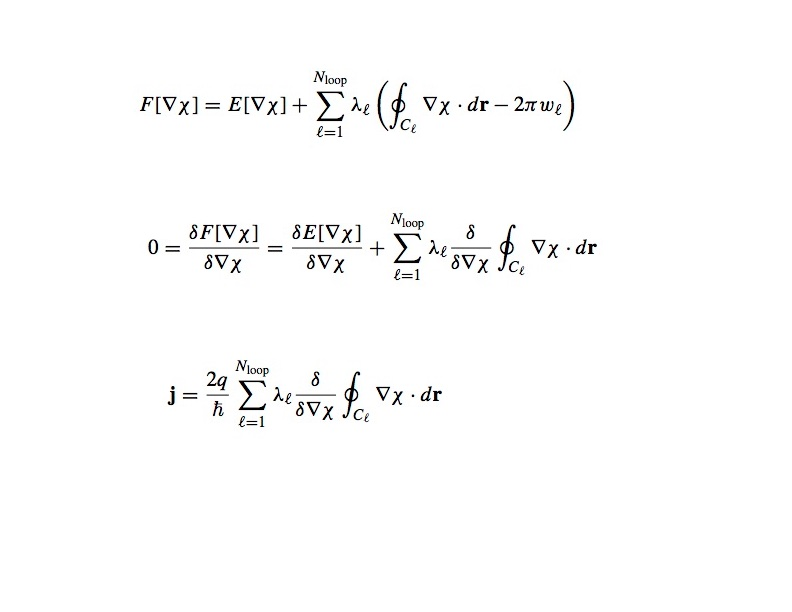
χを求めるために、第1式のような汎関数を考えます。第1項はエネルギーで、第２項は波動関数の一価性からの束縛条件です。 停留条件より第２式が得られます。これから、電流密度に対する第３式が得られます。電流密度はループ電流の和として表されます。
χを求めるために、第1式のような汎関数を考えます。第1項はエネルギーで、第２項は波動関数の一価性からの束縛条件です。 停留条件より第２式が得られます。これから、電流密度に対する第３式が得られます。電流密度はループ電流の和として表されます。
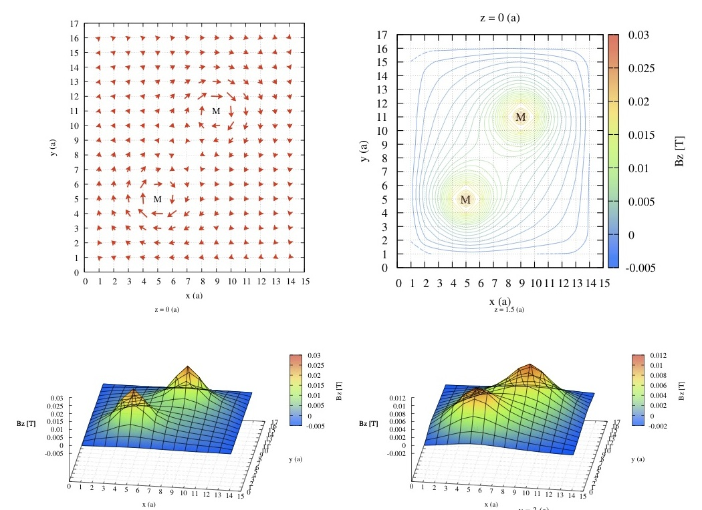
スピン渦誘起ループ電流の検出
スピン渦誘起ループ電流は局所的にかなり強い磁場をつくる事が理論的に予想されています。数nmの範囲にしか広がっていませんが、0.03Tの磁束密度があります。この強い磁場を検出すれば、スピン渦誘起ループ電流の存在を証明できます。今までのところまだ、観測されていません。
スピン渦誘起ループ電流は局所的にかなり強い磁場をつくる事が理論的に予想されています。数nmの範囲にしか広がっていませんが、0.03Tの磁束密度があります。この強い磁場を検出すれば、スピン渦誘起ループ電流の存在を証明できます。今までのところまだ、観測されていません。
スピン渦誘起ループ電流とBCS理論
現在、超伝導理論として広く受け入れ得られている理論はBCS理論です。スピン渦誘起ループ電流による超伝導理論は、実は、BCS理論を含むより広い理論である可能性が高いです。そのことについては、以下のページをご覧ください。
筑波大 ホームページ
実は、現在の超伝導理論には、いくつか、明らかにしなければならない点が残っています。特に、重要なのは、ジョセフソンが予言したac電流が観測されていないということです。ジョセフソンは、超伝導-絶縁体-超伝導体で作った、ジャンクションにdc 電圧をかけるとac電流が流れると予言しました。しかし、実際にはdc電圧をかけることはできません。電流が流れるときは、ジャンクション間の電圧がゼロになってしまい、直流が流れます（これをdcジョセフソン効果という）。ジャンクション間の電圧をゼロでなくするためには、絶縁体の部分に振動する電場が必要です。これは、普通、実験では、マイクロ波を照射することにより実現します。以下の動画がその様子を説明しています。
(Original: https://www.youtube.com/watch?v=Z9vBPQrG0U4&nohtml5=False, 動画を再生するには、videoタグをサポートしたブラウザが必要です)
困ったことに、ファインマン物理学、キッテルの固体物理学入門、ティンカムの超伝導入門などの教科書に、ジャンクションにdc 電圧をかけることができ、実験でac電流が観測されたと記述されてしまいました。このため、上で述べた問題点が残っていることが、一般には、知られることがなくなってしまいました。実は、この問題点は、スピン渦誘起ループ電流による超伝導理論により、解決されます。つまり、スピン渦誘起ループ電流による超伝導理論こそが、本当の超伝導理論である可能性が高いのです。
スピン渦誘起ループ電流を量子ビットとした量子コンピューター実現
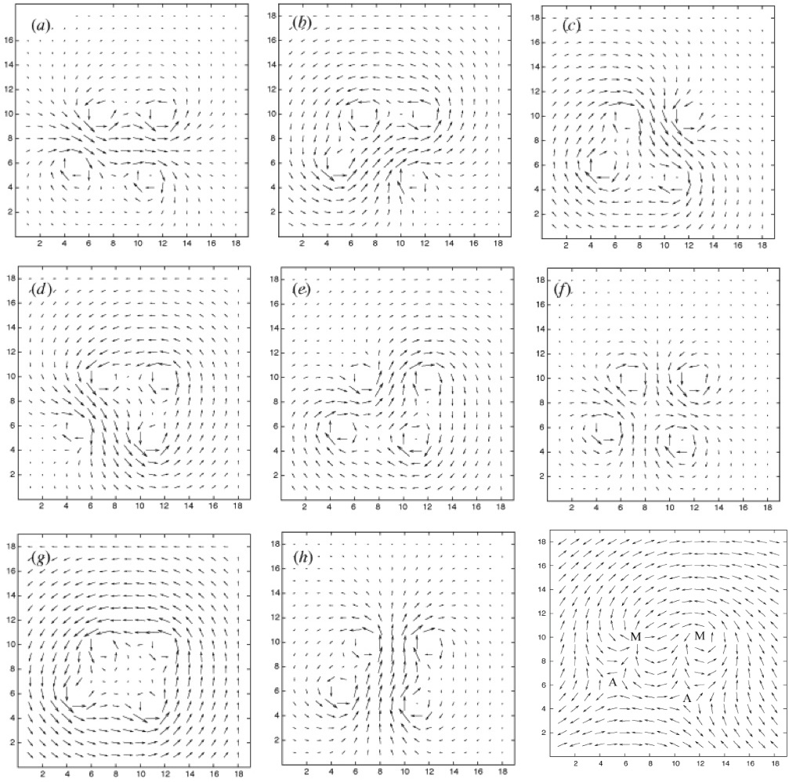
スピン渦誘起ループ電流の制御：量子コンピュータへの応用
巻き数+1または−１のスピン渦に対して、巻き数+1または、−１のループ電流が可能です。右下の図のような２つの巻き数+1のスピン渦（Mで中心が示してある）と２つの巻き数ー1のスピン渦（Aで中心が示してある）がある系を考えます。各々のスピン渦のまわりに巻き数+1または、−１のループ電流ができるとすると、電流パターンは16通りになります。そのうちの８つを図の(a)-(h)に示します。残りの８パターンは全てに電流を逆向きにしたものになります。このループ電流の右向きー左向きを量子ビットとして量子コンピュータが実現出来る可能性があります。 従来の計算機は1ビットにつき、0か1の何れかの値を持つのに対し、量子計算機では量子ビットにより、1ビットにつき0と1の値を任意の割合で重ね合わせて保持することが可能です。したがって、n量子ビットあれば、2nの状態を同時に計算できる。もし、数千量子ビットのハードウェアが実現したら、理論上、現在のスーパーコンピューターで数千年かかっても解けないような計算でも、例えば数十秒といった短い時間でこなすことができることになります。 現在、理研の世界最高性能スーパーコンピューターの使用可能メモリーが10ペタビット（10の16乗）くらいですが、100量子ビットの量子コンピューターは10の30乗（= ２の１００乗）ビットのメモリー空間をつかうことになります。大きさも小部屋一つくらいに納まり、使用電力も一世帯のそれぐらいであると考えられ（次世代スーパーコンピューターは専用の発電所が必要）環境負荷も小さいと予想されます。計算機の大幅な性能アップ、環境エネルギー問題などの観点からも量子コンピューターの早期実現が望まれます。
巻き数+1または−１のスピン渦に対して、巻き数+1または、−１のループ電流が可能です。右下の図のような２つの巻き数+1のスピン渦（Mで中心が示してある）と２つの巻き数ー1のスピン渦（Aで中心が示してある）がある系を考えます。各々のスピン渦のまわりに巻き数+1または、−１のループ電流ができるとすると、電流パターンは16通りになります。そのうちの８つを図の(a)-(h)に示します。残りの８パターンは全てに電流を逆向きにしたものになります。このループ電流の右向きー左向きを量子ビットとして量子コンピュータが実現出来る可能性があります。 従来の計算機は1ビットにつき、0か1の何れかの値を持つのに対し、量子計算機では量子ビットにより、1ビットにつき0と1の値を任意の割合で重ね合わせて保持することが可能です。したがって、n量子ビットあれば、2nの状態を同時に計算できる。もし、数千量子ビットのハードウェアが実現したら、理論上、現在のスーパーコンピューターで数千年かかっても解けないような計算でも、例えば数十秒といった短い時間でこなすことができることになります。 現在、理研の世界最高性能スーパーコンピューターの使用可能メモリーが10ペタビット（10の16乗）くらいですが、100量子ビットの量子コンピューターは10の30乗（= ２の１００乗）ビットのメモリー空間をつかうことになります。大きさも小部屋一つくらいに納まり、使用電力も一世帯のそれぐらいであると考えられ（次世代スーパーコンピューターは専用の発電所が必要）環境負荷も小さいと予想されます。計算機の大幅な性能アップ、環境エネルギー問題などの観点からも量子コンピューターの早期実現が望まれます。
量子コンピュータ特許
我々は、スピン渦誘起ループ電流を量子ビットとした量子コンピューターの特許を取得しました。 実験家で興味ある方は、ご連絡ください。
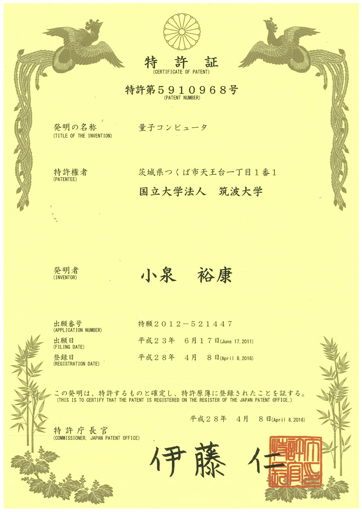